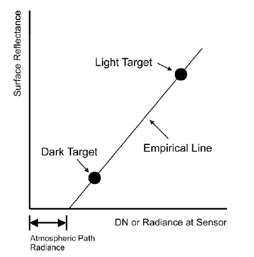

3 Touch the Essense of Data
Welcome to Week 3!
This week, we delved into the processing of remote sensing data covering corrections, calibration, dataset joining and enhancement. Though the formulas and principles behind these processes can be complex, I’ll focus on explaining the logic and procedures to demystify them.
3.1 Dictionary
- Atmospheric attenuation: The absorption of electromagnetic radiation by materials in the atmosphere.
- Digital number (DN): Raw data collected by satellites, representing the brightness values of images.
- Irradiance: The amount of radiation from sun to Earth’s surface.
- Path radiance: Radiance that is reflected above the surface.
- Radiance: The amount of radiation from Earth’s surface to the sensor.
- Reflectance: The ratio of light leaving to light striking. It’s the property of the material.
- Mosaicking: The process to merge two images.
- Nadir: The direction pointing directly downwards from the sensor, with no angular deviation.
3.2 Radiometric Calibration
Radiometric calibration involves converting the digital number (DN) into spectral radiance using linear regression. This conversion is essential because DN, in its raw form, is unitless and not directly useful for analysis. The calibration coefficients are determined in the laboratory before the sensor’s launch, facilitating the acquisition of radiance data. This process is a foundational step in data correction.
3.3 Corrections
3.3.1 Why we need corrections on data?
Before the wave return to the sensor and form data, it will travel through a looong trip (REMEMBER WEEK 1). The first station is atmosphere, then the ground which is covered by different materials and experience different weather. All those scenes can affect the accuracy of data indicating the importance of corrections. The corrections often includes:
- Geometric correction
- Atmosphere correction
- Orthorectification correction / topographic correction
3.3.2 Geometric correction
Data may be distorted because of several factors:
- View angle off-nadir
- Topography contains not flat ground
- Wind
- Rotation of Earth
The correction of EO data is realised based on the ‘golden standard image’ which is the true image using linear regression. There are two ways:
From EO Data to True Image: the EO data is input (dependent variables) and we will get the true image data (independent variables), that is, we can know where is the EO data point on the true image;
From True Image to EO Data: the true image is input (dependent variables) and we will get the EO data (independent variables), that is, we can know points on the true image should come from which EO data point.
Think: Which way is better?
3.3.3 Atmospheric correction
Always use this correction if you want to get precise data!
When waves cross the atmosphere, the particles will scatter or absorb part of it. Scattering will create “adjacency effect” which means radiance from pixels nearby mixed into pixel of interest.
There are three types:
- Relative
- Dark object subtraction (DOS): assume the darkest value of pixel in the image should be 0;
- Pseudo-invariant features (PIFs): linear regression with the coefficients calculating from objects not change.
- Absolute
It involves converting digital brightness values to scaled surface reflectance, facilitating comparisons across different regions of the planet. This is achieved through atmospheric radiative transfer models, such as MODTRAN 4+ and Py6S.
- Empirical life correction
\[ Reflectance (field spectrum) = gain × radiance (input data) + offset \] whew gain is atmospheric attenuation, offset is path radiance. We often choose a light object and a dark object on site and use the measured reflectance to calculate the empirical line, and then apply the line to all things.

3.3.4 Orthorectification/topographic correction
The purpose of orthorectification correction is to make pixels viewed at nadiar.
Solar zenith and solar azimuth describing the illumination source will be used in the formula.
3.3.5 Summary of corrections
3.3.6 Exciting news
Sounds complicated, right?
A good news is that remote sensing products provide those corrections within them. Landsat Ecosystem Disturbance Adaptive Processing System (LEDPAS) use second Simulation of a Satellite Signal in the Solar Spectrum (6S) radiative transfer model. Landsat 8 Surface Reflectance algorithm (L8SR) /Landsat 8 Surface Reflectance Code (LaSRC) use an internal algorithm considering the component of atmosphere.
However, the algorithms often rely on data from other satellites, such as MODIS, to simulate various elements in the atmosphere. If these data themselves are affected by the atmosphere, then using them as a basis for correction could introduce errors.
3.4 Dataset joining
When mosaicking for our study area, the brightness, colour or some images properties may differ, which will cause a seamline between them. Thus, we will feather the base image and the second image:
- Within the overlap area an representative sample is taken
- A histogram is extracted from the base image
- It is then applied to image to using a histogram matching algorithm
3.5 Enhancement
Contrast enhancement
Local enhancement - specific to a pixel
Edge enhancement
Principal component analysis (PCA)
Some studies group the variables - social/environmental to assess the importance of the factors and identify the changes.
- Texture enhancement
- first order variance value based on neighborhood
- second order variance shift to up/down/left/right
3.6 Application of corrections in literature
In the realm of environmental applications, atmospheric correction plays a pivotal role in enhancing the accuracy of remote sensing data. Papers are about various atmospheric correction techniques, namely Quick Atmospheric Correction (QUAC), Dark Object Subtraction (DOS), Fast Line-of-sight Atmospheric Analysis of Spectral Hypercubes (FLAASH), ATCOR 2, ATCOR 3, and the Empirical Line Method (ELM), applied to Landsat imagery across diverse studies.
The study by Dewi and Trisakti compared QUAC, DOS, and FLAASH methods, revealing that FLAASH produced images with significantly altered contrasts, suggesting an effective atmospheric correction. However, the spectral analysis indicated that FLAASH was not as effective, especially for vegetation and water bodies, likely due to the specific atmospheric and aerosol variables prevalent in the Indonesian context. Conversely, QUAC and DOS methods exhibited more accurate spectral patterns for vegetation and water, with DOS particularly aligning closer to the Surface Reflectance (SR) data from the USGS, demonstrating its efficacy in producing compatible spectral patterns.
On the other hand, Tan et al.’s evaluation of ATCOR 2, ATCOR 3, FLAASH, and ELM highlighted ATCOR 3 as the most accurate for Ground Reflectance (GR) and Particulate Matter less than 10 µm (PM10), while ELM excelled in Total Suspended Solids (TSS) analysis. This study underscores the nuanced efficacy of different atmospheric correction methods depending on the environmental parameter in question, with ATCOR 3 showing a high correlation coefficient for GR and PM10 data, thus suggesting its suitability for precise environmental monitoring.
These papers underscore the critical need to select atmospheric correction techniques based on the specific requirements of the study and the inherent characteristics of the data being processed. While FLAASH demonstrated a visually improved contrast, its spectral analysis accuracy was outperformed by DOS in the Indonesian context, hinting at the method’s sensitivity to local atmospheric conditions. Meanwhile, ATCOR 3’s superior performance in correlating GR and PM10 data positions it as a robust choice for environmental applications requiring high precision.
In conclusion, while FLAASH offers visual enhancements, its application in spectral accuracy is context-dependent. DOS emerges as a versatile and effective method, particularly for land cover analysis in areas similar to Indonesia. The distinct superiority of ATCOR 3 in handling GR and PM10 data makes it indispensable for environmental monitoring where precision is paramount.
3.7 Reflection
Reflecting on this week’s content, I’m particularly fascinated by the complex interplay between the theoretical aspects of remote sensing data processing and their practical applications in environmental monitoring. The nuanced understanding of atmospheric attenuation, radiometric calibration, and the various corrections—geometric, atmospheric, and orthorectification—highlights the intricate challenges inherent in deriving accurate and useful data from satellite imagery. The notion that the journey of electromagnetic radiation, from its source to the sensor, is fraught with alterations by atmospheric conditions, terrain, and human-induced factors, underscores the importance of these corrections in ensuring data reliability.
The methodologies and tools discussed, such as radiative transfer models (e.g., MODTRAN 4+ and Py6S) and the empirical line method, showcase the scientific community’s efforts to enhance data accuracy. It’s enlightening to understand that despite the complexity of these processes, advancements in remote sensing technologies and algorithms have made it increasingly feasible to obtain high-quality, corrected datasets. This progression not only makes remote sensing data more accessible but also amplifies its utility across a broad spectrum of environmental studies.
From a personal standpoint, the aspect of atmospheric correction and its critical role in environmental applications captivates me. Knowing that different correction methods (e.g., DOS, FLAASH, ATCOR) can yield varied results depending on the specific context (e.g., vegetation, water bodies, atmospheric conditions) provides a deep insight into the necessity of selecting the appropriate technique for each study. This selection process, nuanced and dependent on the environmental parameter in question, exemplifies the critical thinking required in environmental science.
Looking to the future, the skills and knowledge gained this week have profound implications for my potential involvement in environmental monitoring projects. Understanding how to process and correct remote sensing data ensures that I can contribute to generating accurate and meaningful insights into environmental changes, such as deforestation, urban expansion, and climate change impacts. Moreover, the discussion about dataset joining and enhancements like contrast, edge, and texture enhancements piques my interest in exploring how these techniques can be applied to improve data visualization and interpretation.
However, the acknowledgment of the limitations and potential inaccuracies inherent in atmospheric correction algorithms serves as a reminder of the need for continuous improvement in remote sensing technologies and methodologies. It suggests that while current tools and data are immensely valuable, there is always room for innovation that could lead to even more precise and reliable environmental monitoring solutions.